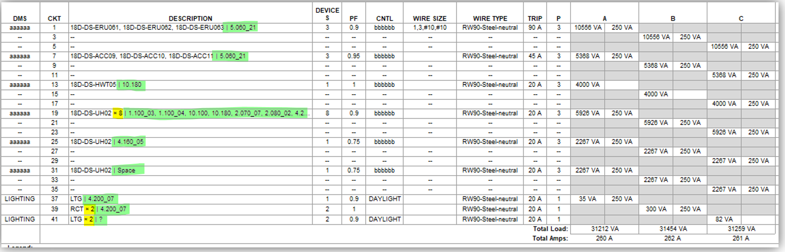

Descripción de circuitos
Tabla de contenidos
El comando Circuit description genera automáticamente descripciones uniformes e informativas para circuitos eléctricos basadas en el equipo conectado y su ubicación. La descripción se forma con los tipos de equipos, sus cantidades y los números de habitaciones donde están instalados.
Uso
- Abra una tabla de panel eléctrico (Panel Schedule) en Revit
- Puede seleccionar varias tablas en el navegador del proyecto para procesamiento por lotes
- Ejecute el comando Circuit description
- Espere a que finalice — el comando procesará todos los circuitos de los paneles seleccionados
- Verifique los resultados en el parámetro Load Name de cada circuito
- Abra el informe — haga clic en la notificación para ver un informe detallado en Excel
Formato de descripción
La descripción del circuito se forma en el siguiente formato:
Código de equipo × Cantidad, Código2 × Cantidad | Número de habitación × Cantidad, Habitación2 × Cantidad
Ejemplos
Ejemplo 1: Circuito con iluminación y receptáculos en diferentes habitaciones
LTG × 4, RECPT × 2 | 101 × 3, 102 × 3
Explicación: El circuito tiene 4 luminarias (LTG) y 2 receptáculos (RECPT) conectados. De estos, 3 elementos están instalados en la habitación 101, y 3 elementos en la habitación 102.
Ejemplo 2: Circuito solo con receptáculos en una habitación
RECPT × 5 | 201
Explicación: El circuito tiene 5 receptáculos, todos en la habitación 201. La cantidad “× 1” se simplifica automáticamente.
Ejemplo 3: Circuito con equipo eléctrico
AHU-01 × 2 | 305 × 2
Explicación: El circuito tiene 2 unidades de equipo AHU-01 conectadas, ambas en la habitación 305.
Ejemplo 4: Circuito con luminarias numeradas
LTG-01, LTG-02, LTG-03 | 101 × 3
Explicación: El circuito tiene tres luminarias numeradas en la habitación 101.
Lógica de códigos de equipo
El comando determina automáticamente el código de cada elemento en el circuito según su categoría y parámetros:
Equipo eléctrico (Electrical Equipment)
El código se toma del parámetro SRS_Schedule_Name
Ejemplos: AHU-01, FCU-02, PUMP-03
Luminarias (Lighting Fixtures)
- Primero se verifica el parámetro
SRS_MEP_Equipment_Code(instancia, luego tipo) - Si se encuentra el parámetro
SRS_Equipment_Number, se agrega al código con un guion - Si no se encuentra ningún código, se usa la designación estándar
LTG
Ejemplos: LTG, LTG-01, LTG-02
Dispositivos eléctricos (Electrical Fixtures)
- El código se toma del parámetro
SRS_MEP_Equipment_Code(instancia, luego tipo) - Si se encuentra el parámetro
SRS_Equipment_Number, se agrega al código con un guion - Si no se encuentra ningún código, se usa
?
Ejemplos: PANEL-01, DIST-02
Otras categorías
Para todas las demás categorías (receptáculos, interruptores, etc.), se usa la designación estándar RECPT
RECPT = receptáculo
Determinación de ubicación
El comando determina el número de habitación para cada elemento en el siguiente orden:
- MEP Spaces — método principal. El comando verifica si el punto de colocación del elemento está dentro de un espacio MEP
- Parámetro Location — si el elemento no está en ningún espacio MEP, se usa el parámetro de ubicación estándar de Revit
- Símbolo “?” — si no se puede determinar la ubicación
Características de detección de habitaciones
- El comando usa un algoritmo optimizado con caché para el procesamiento rápido de grandes cantidades de elementos
- Para elementos del mismo circuito, las habitaciones usadas frecuentemente se verifican primero
- El comando puede usar descripciones creadas manualmente anteriormente para aclarar la ubicación de elementos con ubicaciones indefinidas
Informe
Después del procesamiento, se crea un informe detallado en formato Excel con la siguiente información:
- Panel — nombre del panel eléctrico
- PanelId — ID del panel en Revit
- Circuit — nombre del circuito
- CircuitId — ID del circuito en Revit
- OldDescription — descripción anterior del circuito
- NewDescription — nueva descripción generada (o “=” si la descripción no cambió)
El informe se guarda en la carpeta:
%APPDATA%\Sener\BimTools\Reports\GenCircuitDescription\
Consejos
- Procesamiento por lotes: Seleccione varias tablas de paneles en el navegador del proyecto antes de ejecutar el comando para procesamiento simultáneo
- Volver a ejecutar: El comando se puede ejecutar repetidamente — actualizará las descripciones según el estado actual del modelo
- Revisión del informe: Preste atención a las filas con “=” en el informe — estos son circuitos que ya tenían la descripción correcta
- Elementos indefinidos: Si aparecen símbolos “?” en la descripción, verifique la presencia de MEP Spaces en el modelo y la correcta colocación de elementos
